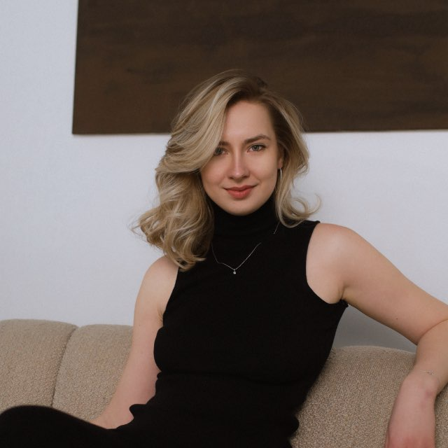

Руководитель с опытом более 6 лет в операционном управлении, запуске проектов «под ключ» и масштабировании бизнеса. Выстраиваю системы, которые повышают ключевые метрики: увеличила клиентскую базу на 40%, сократила текучесть на 27%, оптимизировала ФОТ на 15%.
Сочетаю системное мышление и креативный подход для создания эффективных процессов в проектах на стыке творчества, технологий и сервиса. Адаптивна к изменениям, работаю в условиях VUCA. Особый интерес питаю к проектам, связанным с гастрономией, созданием продукта и клиентского опыта.
Образование: Финансовый университет при Правительстве РФ (Москва). Специальность: Экономика и бизнес-технологии / Бизнес-информатика.
Инструменты: Уверенный пользователь CRM, Google Analytics, Excel, Google Sheets, Trello, Notion, Figma. Владение Al-инструментами: ChatGPT, Midjourney, Notion Al.
Языки: Русский (родной), Английский (В1 - Intermediate).
За 8 месяцев увеличила активную клиентскую базу на 40% (до 10 000) и лидогенерацию на 44% за счет органического прироста, запуска бесплатного Telegram-канала (рост до 40 000 подписчиков) и внедрения геймификации.
Управляла полным циклом создания приложения в Telegram: от идеи до внедрения и координации разработчиков. Повысила удержание пользователей на 15% и увеличила срок жизни клиента в 2 раза.
Внедрила систему КРІ и отчетности. Оптимизировала ФОТ на 15% за счет перевода сотрудников с окладов на мотивационную схему, повысив их ответственность.
Обеспечила полный цикл запуска образовательного продукта за 1.5 месяца: от поиска эксперта до построения отделов (команда 15 чел). Выручка составила 3 млн ₽ в первый запуск.